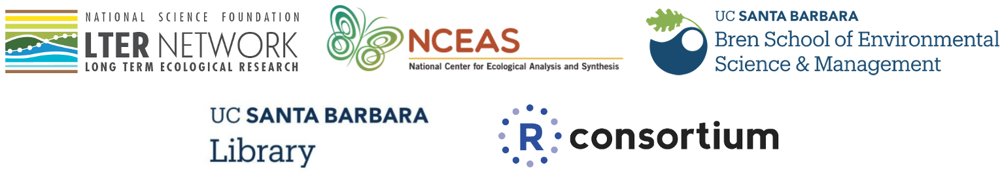

The mission of the Long Term Ecological Research program (LTER) Network is to “provide the scientific community, policy makers, and society with the knowledge and predictive understanding necessary to conserve, protect, and manage the nation’s ecosystems, their biodiversity, and the services they provide.” A specific goal of the LTER is education and training - “to promote training, teaching, and learning about long-term ecological research and the Earth’s ecosystems, and to educate a new generation of scientists.”
The goal of this package is to provide a sampler to gather feedback from the community of what will be a larger package containing 28 datasets - one from each of the existing US LTER sites. Those datasets are subsets of the original data and have been updated - sometimes substantially - from the raw data. They are aimed to be useful for teaching and training in environmental data science. This content is thus not suitable for research and should only be used for teaching purposes.
We encourage you to explore existing LTER teaching and training initiatives, and the many other available LTER datasets which can be accessed via the Environmental Data Initiative. Please contact cited researchers directly to discuss using data for research purposes or in publication.
Installation
You can install the CRAN version of lterdatasampler with:
install.packages("lterdatasampler")You can install the development version of lterdatasampler from GitHub with:
# install.packages("remotes")
remotes::install_github("lter/lterdatasampler")The dataset samples
Dataset samples currently included in the package are summarized below; see individual Articles for data and source details. Note: the three letter prefix for each dataset indicates the LTER site (see full list of site abbreviations).
-
and_vertebrates: Records for aquatic vertebrates (cutthroat trout and salamanders) in Mack Creek, Andrews Experimental Forest, Oregon (1987 - present) -
arc_weather: Daily meteorological (e.g. air temperature, precipitation) records from Toolik Field Station, Alaska (1988 - present) -
hbr_maples: Sugar maple seedlings at Hubbard Brook Experimental Forest (New Hampshire) in calcium-treated and reference watersheds in August 2003 and June 2004 -
knz_bison: Bison masses recorded for the herd at Konza Prairie Biological Station LTER -
luq_streamchem: stream chemistry data for the Quebrada Sonadora (QS) location part of the Luqillo tropical forest LTER site -
ntl_icecover: Ice freeze and thaw dates for Madison, Wisconsin Area lakes (1853 - 2019), North Temperate Lakes LTER -
ntl_airtemp: Daily average air temperature data for Madison, Wisconsin (1869 - 2019), North Temperate Lakes LTER -
nwt_pikas: Pika observations for habitat and stress analysis at Niwot Ridge LTER, Colorado -
pie_crab: Fiddler crab body size recorded summer 2016 in salt marshes from Florida to Massachusetts including Plum Island Ecosystem LTER, Virginia Coast LTER, and NOAA’s National Estuarine Research Reserve System
Which data sample should I use?
These data samples are selected because they have features we feel are commonly useful in introductory environmental data science and statistics courses.
In the table below, we list some introductory methods / skills, then share which data samples in this package we think are well-suited to use when teaching or learning them! It is not comprehensive - there are many different analyses & skills that these data samples would facilitate. Here we highlight a few that we think would be commonly useful
Recommended data samples for introducing selected topics
| Data sample | For example you could: | |
|---|---|---|
| Linear relationships |
pie_crab
|
Model the relationship between fiddler crab size and latitude using pie_crab , while learning about Bergmann’s Rule!
|
ntl_icecover
|
Investigate the relationship between winter temperatures and ice cover duration for Wisconsin lakes using ntl_icecover
|
|
hbr_maples
|
Explore seedling height-mass relationships for sugar maples using hbr_maples
|
|
| Non-linear relationships |
knz_bison
|
Model the relationship between bison age and mass for male and female bison using knz_bison, for example estimating parameters in the Gompertz model
|
and_vertebrates
|
Model the length-mass relationships for cutthroat trout and salamanders in Mack Creek, Oregon | |
| Time series analysis |
arc_weather
|
Explore seasonality, wrangling dates, or practice forecasting using daily meteorological records from Toolik Station, Alaska |
luq_streamchem
|
Investigate the impact of a hurricane on stream water chemistry | |
| Spatial data introduction |
nwt_pikas
|
Introduce basics of spatial data (e.g. CRS, projections) and tools for working with spatial data by visualizing pika locations at Niwot Ridge in the Colorado Rockies |
| Comparing groups |
hbr_maples
|
Compare sugar maple seedling heights in previously calcium-treated versus untreated watersheds using hbr_maples, using the exercise as an opportunity to think about acid rain and soil acidification
|
and_vertebrates
|
Explore differences in size and abundance of cutthroat trout and salamanders in old growth versus previously clear cut forest sections (2 groups) or in different conditions (> 2 groups, e.g. pool, cascade, riffle) of Mack Creek, Oregon |
How to provide feedback
The best way to provide feedback on this package is to open an issue and assign the feedback label. Thank you!
Acknowledgements
Thank you to the amazing students who contributed to this project: Sam Guo, Adhitya Logan, Lia Ran, Sophia Sternberg, Karen Zhao as part of their UCSB Data Science capstone project. Thank you also go to their Course Advisor Prof. Sang-yun Oh.
People / organizations who supported this project:
- LTER Network Office
- LTER Information Managers
- LTER Education Committee
- All the LTER Researchers and Site PIs
- Cyber-infrastructures: EDI and DataONE
We gratefully acknowledge all authors and contributors of the roxygen2, usethis, pkgdown, devtools, tidyverse and metajam packages. This website relies heavily on themes created by Dr. Desirée DeLeon and Dr. Alison Hill.
